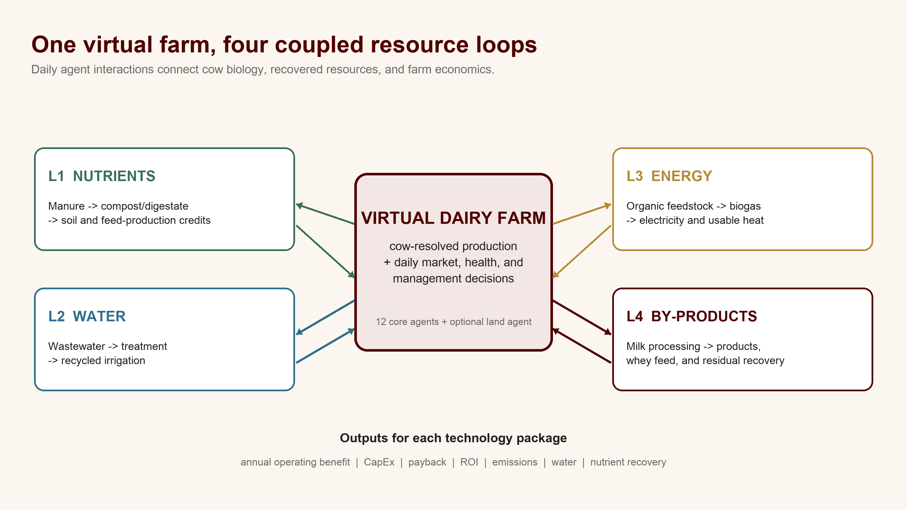
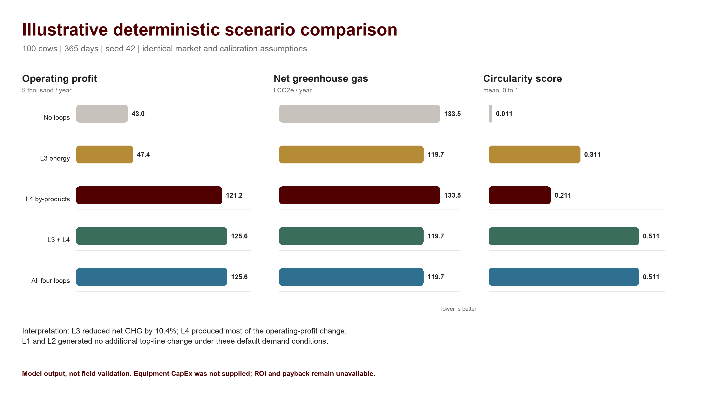

An Agent-Based Virtual Farm Model Evaluating Operating Returns and Resource Recovery in Circular Dairy Bioeconomy Systems
1Department of Animal Science 2Department of Statistics Texas A&M University
Why this matters
Source: USDA NASS, 2022 Census of Agriculture Dairy Cattle and Milk Production.
Research question
Which combinations of nutrient, water, energy, and by-product pathways improve farm operating performance and reduce resource losses under the same herd and market assumptions?
Hypothesis. Coupled pathways will change profit, emissions, and resource use differently from isolated technology evaluations.
Model and experiment
- Simulate cow-resolved milk, feed, water, manure, methane, health, and reproduction every day.
- Coordinate 12 core agents plus an optional land agent through dated data packets.
- Switch four circular loops on or off, creating 16 technology configurations.
- Hold herd, market, calibration, duration, and seed constant in paired comparisons.
- Report operating benefit, CapEx, payback, ROI, emissions, water, and nutrient recovery when inputs are available.
Daily execution
Market and sensors update first. Feed and management policies prepare the day. Disease, water delivery, cow production, processing, manure, energy, water accounting, environment, and farm management then update in sequence.
A fixed seed uses one seeded random-number generator for deterministic replay.

Figure 1. Each loop exchanges resources with the same virtual farm rather than operating as a stand-alone calculator.
Illustrative results
Model output, not field validation
Figure 2. Deterministic 365-day comparison: 100 cows, seed 42, processor and optional land enabled, identical default market and calibration assumptions. Values are annual model totals or means.
What the run shows
- L3 energy reduced modeled net greenhouse gas by 10.4% and generated 68.2 MWh of electricity.
- L4 by-products produced most of the operating-profit change through modeled dairy processing.
- L1 and L2 produced no additional top-line change under these default demand conditions.
- The combined result equaled L3 + L4, exposing inactive or unconstrained pathways instead of hiding them.
Interpretation and limits
Operating profit is not investment return. Equipment CapEx was not supplied, so ROI and payback are unavailable for this demonstration.
Default calibration includes assumption-marked values. The current run is a software demonstration, not empirical validation or a farm investment recommendation.
Conclusion
Coupled modeling makes cross-loop effects, timing, and unused recovery pathways visible. The framework can compare technology packages without treating manure, water, energy, and processing as isolated decisions.
Future work
- Calibrate against farm observations.
- Add real installed-cost ranges.
- Repeat scenarios across seeds.
- Validate conventional, robotic, certified organic, raw-milk, and beef-on-dairy systems.
References
1. USDA NASS. 2022 Census of Agriculture: Dairy Cattle and Milk Production. 2024.
2. Wood, P.D.P. Algebraic model of the lactation curve in cattle. Nature 216, 164-165 (1967). doi:10.1038/216164a0.
3. Muell, J.D. et al. Farm-scale water-energy-food-waste nexus analysis for a closed-loop dairy system. Front. Environ. Sci. 10:880839 (2022).
Acknowledgments
Texas A&M University Departments of Animal Science and Statistics.
Model availability
github.com/Creator101-commits/research-agents